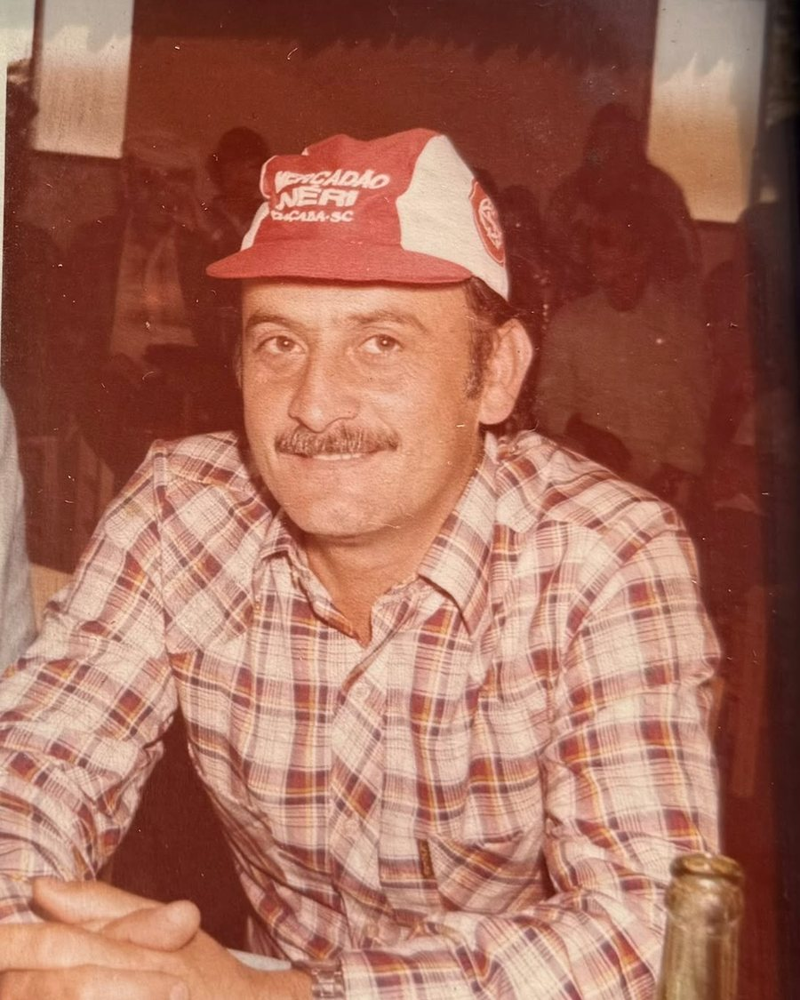

Projeto · Multissetorial
ALcidesPAGgi
A L P A G
Um projeto que não nasce preso a um setor. Construído para durar mais do que qualquer ramo em que entrar — e começando agora.
A origem do nome
Alcides Paggi tentou.
A ALPAG continua.

ALPAG vem de Alcides Ludovico Paggi, avô do fundador do projeto. Não é sigla criada em sala de reunião nem nome escolhido por soar bem em inglês — são as primeiras letras de um nome real.
Ele foi um entre milhões de brasileiros que tentaram abrir o próprio negócio sem rede de proteção, num país onde isso raramente dá certo na primeira vez. A empresa dele não ficou de pé. A vontade de tentar ficou, e é ela que chega até aqui.
Colocar o nome dele na fachada é uma escolha de responsabilidade, não de marketing. Ele limita o que a ALPAG aceita fazer — e é exatamente para isso que serve.
Ele não deixou uma empresa pronta. Deixou a tentativa.
Como escolhemos onde entrar
A ALPAG não é de um ramo só.
O setor muda conforme a oportunidade aparece. O filtro não muda. Antes de abrir qualquer frente, o negócio passa por quatro perguntas — e precisa responder sim às quatro.
O negócio se paga sozinho?
Sem depender de aporte externo para sobreviver ao primeiro ano. Operação que só fecha a conta com dinheiro de fora não entra.
Alguém sai melhor do que entrou?
Cliente, fornecedor ou quem trabalha na frente. Se o ganho vem de um lado só da mesa, o modelo está errado.
Dá para explicar em uma frase?
Negócio que precisa de dez minutos de justificativa costuma estar escondendo alguma coisa — inclusive de quem o criou.
Aguenta ter esse nome na porta?
O nome é o ativo mais caro do projeto, e o único que não se recompra depois de gasto. Nenhum lucro compensa desgastá-lo.
Princípios
No que a ALPAG acredita
- Trabalho feito vale mais que trabalho anunciado.
- Palavra dada vale contrato — e o contrato existe do mesmo jeito.
- Crescer com dinheiro próprio é mais lento — e não deve nada a ninguém.
- Errar cedo e barato faz parte. Errar duas vezes na mesma coisa, não.
O nome já está escolhido. O resto é merecer.
Contato
Vamos conversar.
Parceria, fornecimento, proposta de negócio ou só entender o que a ALPAG está montando. A porta está aberta.